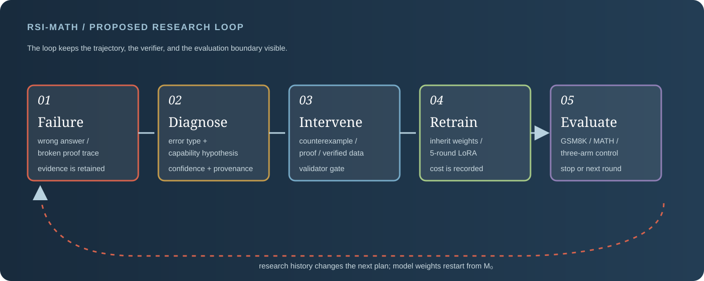
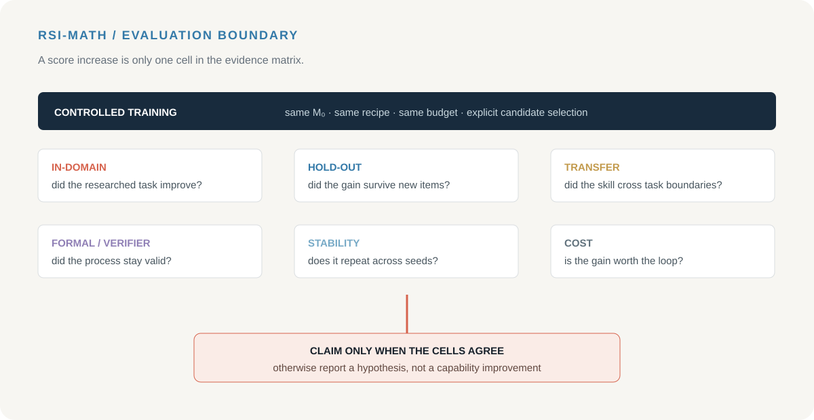

RESEARCH BRIEF
一句话定义
面向 benchmark 的自动化 RSI 框架：统一把「失败诊断 → 生成可验证训练数据 → 训练 → 留出评测」做成流水线，并在同一框架下跑完 Math 与 Visual 两条实验线；视觉线产出 Visual-RSI 论文，数学线产出 RSI-Math 测试。
PROJECT 01 · MATH REASONING · AUTO-RSI
RSI-Math 是一个面向 benchmark 的自动化 RSI（递归自改进）框架：把失败诊断、可验证训练数据生成、训练与留出评测做成可复用流水线。同一框架完成 Math 与 Visual 两条实验线——视觉线产出 Visual-RSI 论文（CVPR 2027 Under Review），数学线产出 RSI-Math 数学测试/评测。数学线以 Qwen2.5-Math-1.5B 为学生、固定 Qwen2.5-Math-7B 诊断出题，LoRA 连续 5 轮；当前为拟定方案，结果待验证。
RESEARCH BRIEF
面向 benchmark 的自动化 RSI 框架：统一把「失败诊断 → 生成可验证训练数据 → 训练 → 留出评测」做成流水线，并在同一框架下跑完 Math 与 Visual 两条实验线；视觉线产出 Visual-RSI 论文，数学线产出 RSI-Math 测试。
DELIVERABLES
自动化 RSI 框架（诊断、出题、验证、训练、评测流水线）、Visual 与 Math 两条实验线、Visual-RSI 论文、RSI-Math 数学测试与分学科评测记录。
01 / WHY THIS PROBLEM
一个模型可能碰巧得到正确答案，也可能依赖错误的中间等式；也可能在熟悉题型上表现良好，但遇到未见组合、参数变化或形式化检查就失效。若训练数据只保留最终答案，失败的结构信息会被丢掉，后续干预也无法回答“究竟修复了什么”。
结果正确、推理过程可靠、证明可以形式化，是三个不同层级的目标，不能用一个 reward 覆盖。
无差别增加题目可能只带来熟悉度和记忆；诊断驱动的数据应对应一个明确能力缺口。
研究集提升可能来自复用和选择；必须加入未见题型、难度变化、跨任务和多次运行。
02 / THE CLOSED LOOP

03 / FAILURE DIAGNOSIS
失败诊断由固定的 Qwen2.5-Math-7B-Instruct 完成：把 1.5B 学生的错误轨迹归到具体能力环节，再据此决定下一轮生成哪类题目与反例。归因必须附带原始轨迹与可验证证据，避免把模型的事后解释当成事实。
| 层级 | 典型失败 | 可验证证据 | 候选干预 |
|---|---|---|---|
| 表示 / 解析 | 读错变量、条件、图形或符号 | 原题与解析后的结构不一致 | 等价改写、结构化解析、反例配对 |
| 局部计算 | 代数变形、算术或边界条件错误 | SymPy 化简、代入检查、数值反例 | 逐步演算、错误定位、局部修复样本 |
| 策略选择 | 选择不适用的定理或证明路线 | 路线前提不满足，或换题型立即失败 | 路线对照、方法选择题、近邻反例 |
| 全局证明 | 逻辑跳跃、循环论证、漏掉情况 | 证明检查器、反例搜索、分支覆盖 | 完整证明与最小反例成对训练 |
| 迁移 / 可靠性 | 熟题正确，参数变化或形式化时失效 | 跨模板、跨难度、跨任务和多次种子 | 组合迁移集、难度阶梯、独立验证集 |
04 / DIAGNOSER–VERIFIER–TRAINER
读取 1.5B 学生的失败轨迹，归因到具体能力环节，并生成针对性题目与反例；不参与解题评测，也看不到封存的测试集。
检查题目条件、答案程序、证明步骤、反例和证据；验证通过才可进入训练集。
用 LoRA 在上一轮权重上继续微调，连续 5 轮；对照组各按自身初始化方式训练，训练失败也计入该轮预算。
在 GSM8K 与 MATH 各学科上按轮次测量收益，比较三组对照，并记录资源成本。
保存每轮计划、数据版本、失败恢复、分数、验证结果和时间成本；历史可影响下一轮策略。
数据污染、答案泄露、验证器绕过、best-of-k 选择和轮次停止条件都要显式审计。
字段示例：展示交付协议的记录结构，不代表某一次模型结果。
{
"failure_id": "algebra_0042",
"task": "prove_or_solve",
"trajectory": {"problem": "...", "steps": ["..."], "answer": "..."},
"diagnosis": {"type": "local_algebra", "evidence": ["..."], "confidence": 0.72},
"intervention": {"operation": "counterexample_pair", "source": "verified"},
"verification": {"symbolic": true, "proof": false, "admitted": false},
"provenance": {"eval_id": null, "source_hash": "...", "round": 1}
}
05 / EXPERIMENT PROTOCOL
| 协议项 | 固定 / 变化 | 必须报告 |
|---|---|---|
| 学生模型 | 固定 Qwen2.5-Math-1.5B-Instruct 作为起点 M0 | 基座版本、tokenizer、LoRA 配置与训练步数 |
| 诊断与出题 | 固定 Qwen2.5-Math-7B-Instruct，负责错误归因与针对性出题 | 诊断模板、归因类型分布、每轮出题量与来源 |
| 数据门控 | 程序化验证器检查题目条件、答案与反例，不通过不入训练集 | 候选题数、验证通过率、被拒原因 |
| 训练方式 | LoRA 连续 5 轮，每轮继承上一轮权重 | 每轮数据量、rank 与学习率、耗时与显存 |
| 对照组 | 普通连续 / 针对性连续 / 针对性重置（每轮回到 M0） | 三组逐轮分数、组间差异与波动 |
| 评测与隔离 | GSM8K 与 MATH（Prealgebra / Algebra / Intermediate Algebra / Precalculus / Number Theory / Counting & Probability / Geometry），测试集封存 | 各学科逐轮准确率、解码设置、测试集是否被用于调参 |
第 k 轮从第 k−1 轮权重继续，检验增益能否累积。
同一批针对性数据，每轮回到 M0，把数据质量与权重累积分开。
两条连续训练线只用数据来源区分，其余配方保持一致。
题目、解答与反例必须通过程序化检查才能进入训练。
GSM8K 与 MATH 各学科分别报告，避免平均值掩盖退化。
记录诊断、出题、验证与 5 轮 LoRA 训练的调用量与耗时。
06 / EVALUATION AND CUMULATIVE GAIN
| 评测面 | 测量内容 | 期望信号 | 失败解释 |
|---|---|---|---|
| 逐轮增益 | 针对性连续组在第 1–5 轮的分数变化 | 曲线整体上行，后几轮仍有增益 | 只剩抖动，说明单轮收益无法累积 |
| 连续 vs 重置 | 针对性连续组与针对性重置组的同轮对比 | 连续组后期高于重置组 | 持平或更低，则累积假设不成立 |
| 普通 vs 针对性 | 两条连续训练线的数据来源差异 | 针对性组在薄弱学科上提升更集中 | 全线一致提升时，可能只是数据量效应 |
| 学科分布 | GSM8K 与 MATH 各子学科分别统计 | 目标学科提升，其他学科不明显退化 | 均值上升但个别学科崩塌，需要回退 |
| 稳定性 | 不同种子与不同解码设置重复 | 轮次结论可重复 | 单次通过可能是解码波动 |
| Cost | 诊断、出题、验证与 5 轮 LoRA 的总开销 | 累积增益与成本可比较 | 增益很小但轮次成本线性增长 |

07 / RELATED WORK MAP
08 / RISKS, FAILURE MODES, DELIVERY NOTES
模型学会满足形式检查的表面格式，却没有获得可迁移的证明能力。需要多种检查器、反例和人工抽查。
所有失败都被归成“推理能力不足”，导致数据干预失去针对性。需要保留原始轨迹和可审计证据。
只报告候选中最好的结果，会把 best-of-k 当成单模型改进。必须冻结选择规则并报告全体候选。
上一轮生成的数据和错误解释会污染下一轮。需要 provenance、版本锁和最大轮数。
训练样本来自评价问题或其答案时，分数失去意义。来源搜索、去重和评测隔离必须成为硬门禁。
Agent 数据构建成本远高于普通训练。要报告总调用、验证时间、训练次数和失败重试，而不是只报准确率。
失败 schema、7B 诊断输出格式、验证器接口与污染检查。
LoRA 连续 5 轮、继承式权重与三组对照记录。
GSM8K + MATH 各学科逐轮报告、三组对照、稳定性与成本。
SOURCES / RESEARCH NOTES